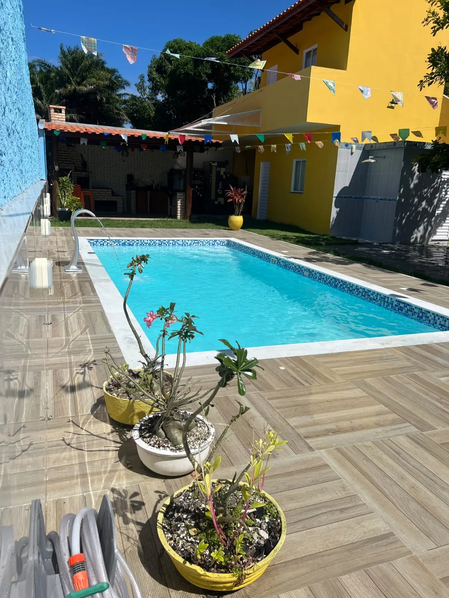

01
Piscinas de fibra
Modelos para diferentes tamanhos de quintal, perfis de uso e projetos residenciais.
Ver inspirações
Piscinas, spas e áreas de lazer na Bahia
Venda e instalação de piscinas de fibra, spas e hidromassagens com atendimento em Camaçari, Salvador e região.
Soluções para sua área externa
Conheça as principais soluções apresentadas pela Linha Verde e descubra qual combina melhor com sua casa e seus momentos de lazer.
Modelos para diferentes tamanhos de quintal, perfis de uso e projetos residenciais.
Ver inspirações
Conforto para relaxar, receber e aproveitar a casa em qualquer época do ano.
Consultar opções
Soluções pensadas para criar ambientes de convivência, descanso e valorização da casa.
Conversar sobre o espaçoProjetos e inspirações
Uma seleção de piscinas, spas e composições para inspirar seu projeto. Clique em uma imagem para ampliar.
Conheça melhor a Linha Verde
Veja produtos, projetos e novidades no Instagram ou consulte o perfil da empresa no Google antes de iniciar a conversa.
Conheça modelos de piscinas, spas, banheiras e registros publicados pela empresa.
Acessar perfil GoogleConsulte as informações e avaliações públicas diretamente no resultado do Google.
Ver no Google BlogCompare alternativas e entenda os pontos que merecem atenção antes da compra.
Ler os artigosLinha Verde Spas e Piscinas
A compra de uma piscina ou spa envolve espaço, uso, instalação e investimento. Por isso, o atendimento começa pela compreensão do que você busca para indicar possibilidades coerentes com sua casa.
Receber uma orientação inicialComunicação direta e linguagem simples do primeiro contato aos próximos passos.
Análise do espaço, da rotina e das expectativas antes da decisão.
Alternativas para quintais compactos, áreas familiares e ambientes mais amplos.
Como funciona
Um fluxo simples ajuda você a entender possibilidades e avançar com mais segurança.
Informe a cidade, envie fotos e compartilhe medidas aproximadas do local.
A equipe entende o perfil do espaço e apresenta caminhos possíveis.
Compare modelos, características e condições antes de escolher.
Com a decisão tomada, são definidos os próximos passos da instalação.
Atendimento regional
Acesse a página da sua cidade e conheça as informações de atendimento local.
Perguntas frequentes
Não encontrou sua dúvida? Envie uma mensagem e explique o que você precisa.
Tirar uma dúvidaSim. A empresa atende Camaçari com venda e instalação de piscinas, spas e soluções para áreas de lazer.
Sim. O atendimento também alcança Salvador, Lauro de Freitas, Simões Filho, Candeias e Mata de São João, conforme avaliação do projeto.
Não. Você pode iniciar o atendimento enviando fotos, medidas aproximadas e explicando como deseja usar o espaço.
Sim. Informe sua cidade e envie fotos do local para receber uma orientação inicial sobre possibilidades e próximos passos.
Sim. Além de piscinas, a Linha Verde apresenta soluções de spas e hidromassagens para áreas residenciais.
Seu próximo espaço favorito pode começar aqui
Envie fotos, medidas aproximadas e sua cidade para receber uma orientação inicial.
Chamar no WhatsApp